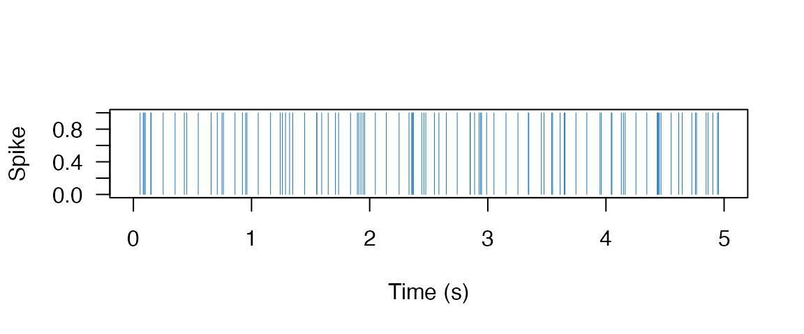
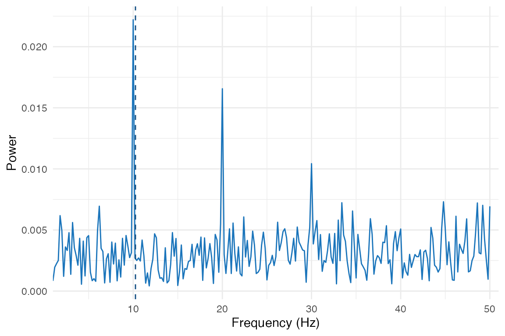
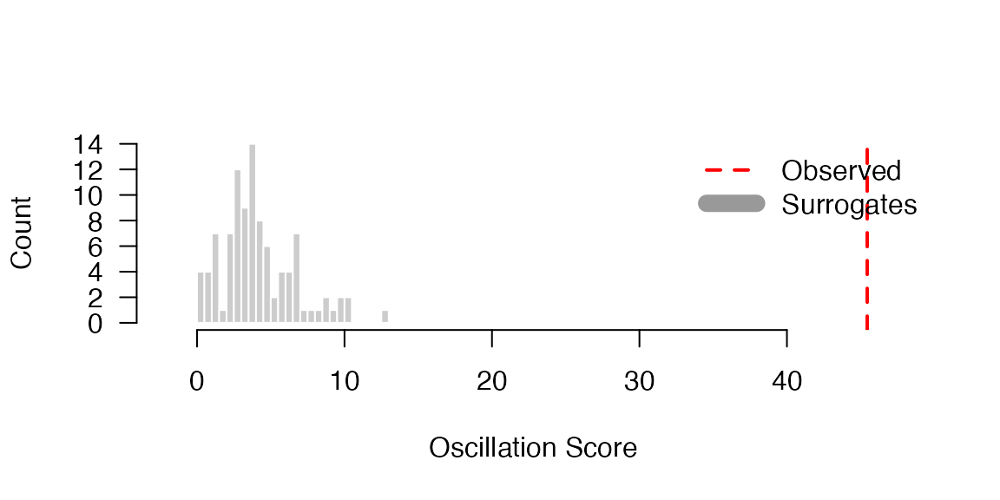
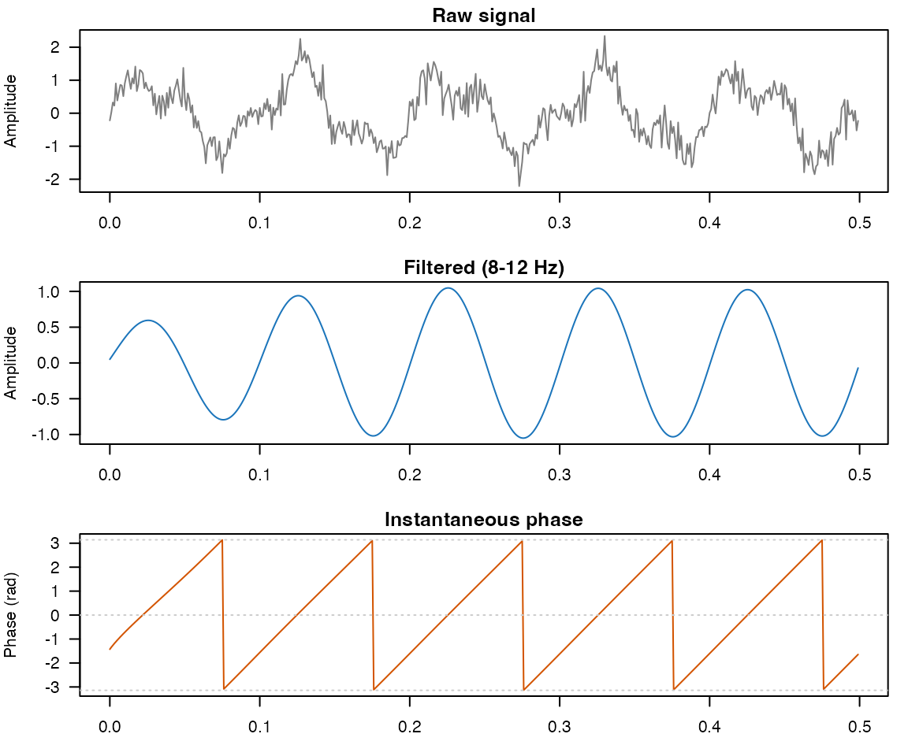

Why oscillation scores?
You’ve recorded behavioral responses — button presses, saccades, or reaction times — and you suspect they have a rhythmic structure. Maybe they cluster at a particular frequency, phase-locked to an underlying neural oscillation. How do you quantify that rhythm and test whether it’s real?
The oscillation score answers this by measuring the strength of periodic structure in your time series. It works by computing an autocorrelogram, removing the central peak, and finding the spectral peak in the frequency band of interest. This vignette walks you through the full pipeline: computing scores, testing significance with surrogates, scanning across frequency bands, and extracting instantaneous phase.
Synthetic Spike Train Example
Let’s create a spike train with 10 Hz periodicity embedded in noise to demonstrate the oscillation score computation.
set.seed(42)
fs <- 1000 # 1 kHz sampling rate
duration <- 5 # 5 seconds
n_samples <- fs * duration
# Create periodic spike train (10 Hz = every 100 samples)
sig <- numeric(n_samples)
spike_times <- seq(50, n_samples - 50, by = 100)
# Add jitter to make it realistic
spike_times <- spike_times + round(rnorm(length(spike_times), sd = 5))
spike_times <- spike_times[spike_times > 0 & spike_times <= n_samples]
sig[spike_times] <- 1
# Add some random spikes as noise
n_noise <- 50
noise_times <- sample(setdiff(seq_len(n_samples), spike_times), n_noise)
sig[noise_times] <- 1
stopifnot(
all(sig %in% c(0, 1)),
sum(sig) > 0,
length(spike_times) > 0
)
cat("Total spikes:", sum(sig), "\n")
#> Total spikes: 100
cat("Periodic spikes:", length(spike_times), "\n")
#> Periodic spikes: 50Here’s what our synthetic signal looks like — periodic spikes at 10 Hz with some jitter and noise spikes mixed in:

Synthetic spike train with 10 Hz periodicity.
Computing the Oscillation Score
The oscillation_score() function computes the
oscillation score through these steps:
- Computing the autocorrelogram of the signal
- Removing the central peak (to focus on periodicity, not spike width)
- Finding the spectral peak in the frequency band of interest
- Returning the ratio of peak power to mean power
# Compute oscillation score in the 5-20 Hz band
result <- oscillation_score(
signal = sig,
fs = fs,
flim = c(5, 20),
smoothach = TRUE,
warnings = TRUE
)
stopifnot(
is.finite(result$oscore),
result$oscore > 0,
is.finite(result$fosc),
result$fosc >= 5,
result$fosc <= 20,
length(result$flim) == 2,
all(is.finite(result$flim)),
result$flim[1] < result$flim[2]
)
cat("Oscillation Score:", round(result$oscore, 3), "\n")
#> Oscillation Score: 45.446
cat("Peak Frequency:", round(result$fosc, 2), "Hz\n")
#> Peak Frequency: 10.25 Hz
cat("Effective frequency limits:", round(result$flim, 2), "Hz\n")
#> Effective frequency limits: 5 20 HzVisualizing the Spectrum
# Get spectrum for visualization
sp <- spectral_peak(sig, fs = fs, flim = c(1, 50))
plot_spectrum(sp$fxx, sp$spectrum, peak = result$fosc)
Power spectrum of the autocorrelogram showing peak at ~10 Hz
Surrogate Testing
To assess statistical significance, we compare the observed oscillation score against a null distribution generated by shuffling spike times. This preserves basic signal properties (spike count, duration) while destroying temporal structure.
# Generate surrogate distribution (100 shuffles)
surrogates <- oscillation_score_surrogates(
signal = sig,
fs = fs,
flim = c(5, 20),
nrep = 100,
fpeak = result$fosc,
keep_trend = FALSE,
warnings = FALSE
)
# Compute z-score against null distribution
valid_sur <- surrogates$oscore_rp[is.finite(surrogates$oscore_rp)]
mean_sur <- mean(valid_sur)
sd_sur <- sd(valid_sur)
z_score <- (result$oscore - mean_sur) / sd_sur
p_upper <- pnorm(z_score, lower.tail = FALSE)
stopifnot(
length(valid_sur) >= 80,
is.finite(mean_sur),
is.finite(sd_sur),
sd_sur > 0,
is.finite(z_score),
is.finite(p_upper),
p_upper >= 0,
p_upper <= 1
)
cat("Surrogate mean:", round(mean_sur, 3), "\n")
#> Surrogate mean: 4.171
cat("Surrogate SD:", round(sd_sur, 3), "\n")
#> Surrogate SD: 2.513
cat("Z-score:", round(z_score, 2), "\n")
#> Z-score: 16.42
cat("P-value (upper-tail):", format(p_upper, digits = 4), "\n")
#> P-value (upper-tail): 6.521e-61
Observed oscillation score (red line) against the surrogate null distribution.
Comparing Different Frequency Bands
A common analysis examines oscillation scores across canonical frequency bands to identify the dominant rhythm:
bands <- list(
theta = c(4, 8),
alpha = c(8, 12),
beta = c(12, 30)
)
results <- lapply(names(bands), function(band_name) {
flim <- bands[[band_name]]
res <- oscillation_score(sig, fs = fs, flim = flim, warnings = FALSE)
data.frame(
band = band_name,
req_fmin = flim[1],
req_fmax = flim[2],
eff_fmin = if (length(res$flim) == 2) res$flim[1] else NA_real_,
eff_fmax = if (length(res$flim) == 2) res$flim[2] else NA_real_,
oscore = res$oscore,
fosc = res$fosc,
stringsAsFactors = FALSE
)
})
results_df <- do.call(rbind, results)
alpha_row <- results_df[results_df$band == "alpha", ]
stopifnot(
nrow(results_df) == length(bands),
nrow(alpha_row) == 1,
is.finite(alpha_row$oscore),
is.finite(alpha_row$fosc),
alpha_row$fosc >= 8,
alpha_row$fosc <= 12
)
results_df_print <- results_df
num_cols <- vapply(results_df_print, is.numeric, logical(1))
results_df_print[num_cols] <- lapply(results_df_print[num_cols], round, 3)
print(results_df_print)
#> band req_fmin req_fmax eff_fmin eff_fmax oscore fosc
#> 1 theta 4 8 4 8.000 8.025 6.348
#> 2 alpha 8 12 8 12.000 43.998 9.766
#> 3 beta 12 30 12 20.412 NA NAAs expected, the alpha band (8-12 Hz) shows the highest oscillation score since our synthetic signal has 10 Hz periodicity.
beta can legitimately return NA for
oscore/fosc here. Internally,
oscillation_score() constrains the requested band to an
effective range based on the data support:
fmax <- min(flim[2], sum(sigq) / (length(sigq) / fs))
For this sparse spike train, the effective beta range is narrower
than 12-30 Hz, and no stable local spectral peak is found in that range.
In that case, the function returns NA, which indicates “no
detectable beta-band peak” rather than an error.
Oscillation scores across frequency bands. The alpha band (containing our 10 Hz signal) shows the strongest score.
Narrowband Hilbert Analysis
To extract instantaneous phase and amplitude at a specific frequency,
use narrowband_hilbert(). This is essential for
phase-locking analyses.
# Create a continuous oscillatory signal for demonstration
t <- seq(0, 2, by = 1/fs)
continuous_sig <- sin(2 * pi * 10 * t) + 0.5 * sin(2 * pi * 25 * t) + rnorm(length(t), sd = 0.3)
# Extract 10 Hz component (alpha band: 8-12 Hz)
nb <- narrowband_hilbert(
data = continuous_sig,
fs = fs,
freqlim = c(8, 12)
)
# Validate narrowband output before interpreting phase/amplitude.
amp <- Mod(nb$analytic)
phases <- Arg(nb$analytic)
stopifnot(
length(nb$analytic) == length(continuous_sig),
length(nb$filtered) == length(continuous_sig),
all(is.finite(Re(nb$analytic))),
all(is.finite(Im(nb$analytic))),
all(is.finite(amp)),
mean(amp) > 0,
all(is.finite(phases)),
all(phases >= -pi),
all(phases <= pi)
)
cat("Analytic signal length:", length(nb$analytic), "\n")
#> Analytic signal length: 2001
cat("Mean amplitude:", round(mean(amp), 3), "\n")
#> Mean amplitude: 0.936
cat("Phase range:", round(range(phases), 2), "radians\n")
#> Phase range: -3.14 3.14 radians
Narrowband Hilbert decomposition: raw signal (top), filtered 8-12 Hz component (middle), and instantaneous phase (bottom).
Using make_continuous_trace
If your data consists of event times (in seconds) rather than a
binary signal, use make_continuous_trace() to convert to a
continuous time series:
# Event times in seconds
event_times <- spike_times / fs
# Convert to continuous trace with Gaussian smoothing
trace <- make_continuous_trace(
events = event_times,
dt = 0.001, # 1 ms bins
sd_smooth = 0.005 # 5 ms Gaussian smoothing
)
stopifnot(
length(trace$signal) > 0,
length(trace$tspan) == length(trace$signal),
all(is.finite(trace$signal)),
all(is.finite(trace$tspan)),
all(diff(trace$tspan) > 0)
)
cat("Trace length:", length(trace$signal), "samples\n")
#> Trace length: 4955 samples
cat("Time span:", round(range(trace$tspan), 2), "seconds\n")
#> Time span: 0 4.95 seconds
# Can now compute oscillation score on the smoothed trace
trace_result <- oscillation_score(
signal = trace$signal,
fs = 1 / 0.001, # fs from dt
flim = c(5, 20),
warnings = FALSE
)
stopifnot(
is.numeric(trace_result$oscore),
length(trace_result$oscore) == 1,
is.numeric(trace_result$fosc),
length(trace_result$fosc) == 1
)
if (is.finite(trace_result$oscore) && is.finite(trace_result$fosc)) {
stopifnot(trace_result$oscore > 0, trace_result$fosc >= 5, trace_result$fosc <= 20)
cat("Oscillation score (smoothed):", round(trace_result$oscore, 3), "\n")
} else {
cat("Oscillation score (smoothed): NA (no stable peak detected in this draw)\n")
}
#> Oscillation score (smoothed): 94.682Next steps
- Test significance with config-driven batch workflows:
vignette("workflow-wrappers") - Analyze phase consistency across trials:
vignette("ppc-clustering") - See
?oscillation_scorefor the full argument list
References
The algorithms in bosc are ported from the behavioral-oscillations MATLAB toolbox. Please cite:
Ter Wal, M. et al. (2021). Theta rhythmicity governs the timing of behavioural and hippocampal responses in humans specifically during memory-dependent tasks. Nature Communications, 12, 7048. https://doi.org/10.1038/s41467-021-27323-3